Il workflow completo, su Kolbo.
Trasforma i personaggi in attori veri
Carica uno screenshot di ogni personaggio del gioco e chiedi una foto vera dello stesso uomo, come se avessero scelto un attore per il film. Descrivi il volto, i capelli e i vestiti che vuoi tenere, e digli di togliere ogni traccia del gioco.
Image 1 shows Franklin Clinton, the video game character from GTA V. Create a genuine photograph of him as a REAL living man, as if a real actor were cast for a live-action film, instantly recognisable as Franklin as he was in GTA V (2013): about 25 years old, slim athletic build, very short black hair, short neat beard, calm confident eyes. Wardrobe: a dark blue short-sleeve button shirt over a white long-sleeve tee, dark jeans. Expression: a relaxed cool half-smile. Remove every trace of the game model: no polygon planes, no painted texture, no plastic skin, no CGI. Real pores, real eyelids, real hairline, slight skin imperfections, subtle asymmetry, unretouched skin. Half-body portrait, 3:4, standing on a dry canyon road in the Los Angeles hills at golden-hour sunset, warm low backlight from the right, shot on ARRI Alexa, 50mm, f/2.8, Kodak Portra 400 look, natural colors, soft bokeh. Photoreal, no text, no logos.
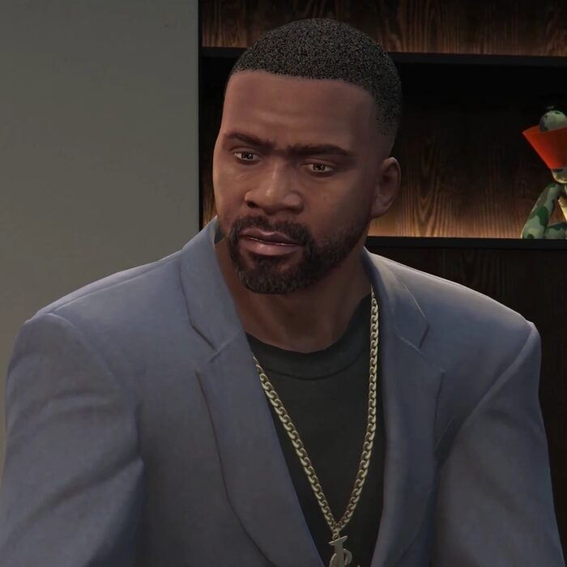
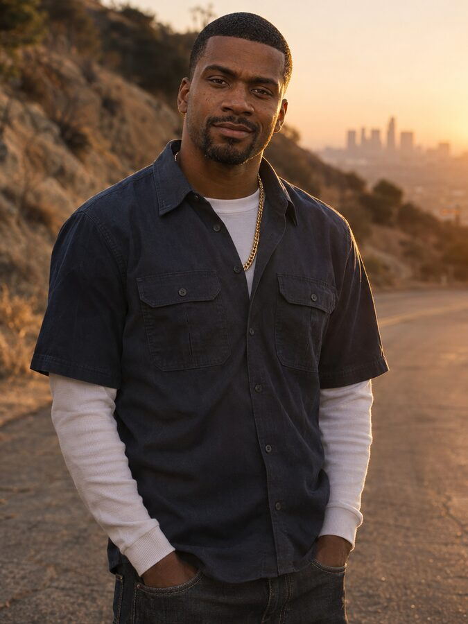

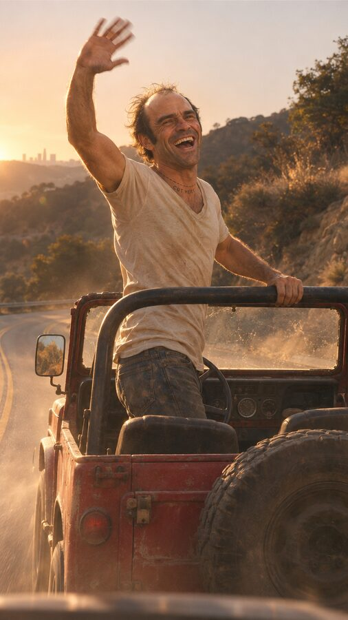
Schede per i ragazzi e per il tuo protagonista
Usa come riferimento la foto che hai scelto e chiedi una scheda della stessa persona da più angolazioni. È questa scheda che legge il modello video, ed è lei che tiene lo stesso volto in ogni inquadratura.
CHARACTER SHEET, 16:9, four panels side by side separated by thin white gutters, on a clean light warm-grey seamless studio background: (1) a tight head-and-shoulders portrait facing the lens, (2) head-and-shoulders three-quarter view turned to the left, (3) head-and-shoulders side profile facing left, (4) a full-body standing shot head to shoes, relaxed. The SAME person in all four panels: identical face, hair, skin and outfit. Expression in every panel: relaxed and friendly, a light natural smile with the mouth closed, warm open eyes. No text, no labels, no watermark. Images 1 and 2 show the SAME man: use them for his exact identity, the same face, the same short dark-brown hair, the same warm brown eyes, the same light stubble and the same smile lines. He is 30 years old. Wardrobe: a plain heather-grey crew-neck t-shirt, dark blue jeans, grey sneakers, a simple gold wedding ring. He is a likeable, healthy, normal, good-looking-in-an-everyday-way person: rested eyes, NO dark circles, NO tired or gloomy look, NO rough or criminal vibe, clean and tidy. Unretouched skin exactly as the camera sees it: visible pores, enlarged pores on the nose, fine lines, uneven skin tone with faint redness on the cheeks, oily shine on the forehead, stray eyebrow hairs, baby hairs, real asymmetry between the two sides of the face. No skin smoothing, no beauty filter, no plastic or waxy skin, no symmetrical "AI face", not a render, not CGI. Light: one large soft key light from the front-left at eye level plus a soft fill, even and flattering but real, true natural skin colours, no orange tint, no golden glow, no dramatic shadows. Shot on a full-frame camera, 85mm lens at f/5.6, real photograph, crisp, natural colours. NOT a stock photo, NOT retouched, NOT a 3D render, NOT CGI. EYEBROWS: two full, continuous, natural eyebrows on every person; NO scar through an eyebrow, NO gap, NO notch, NO shaved slit, NO bald patch in the brow. TEETH: normal, straight, healthy teeth on every person; NO crooked teeth, NO chipped tooth, NO gap tooth, NO missing tooth, NO yellowed teeth. Avoid: crooked teeth, chipped or missing teeth, eyebrow scar, eyebrow slit, gap in the eyebrow, extra fingers, duplicate faces, text, logos, blur on the face, sunglasses, perfect teeth, perfect symmetry, airbrushed skin, fashion-model bone structure, HDR glow.
Il tuo protagonista è un tipo normale e simpatico. Chiedi una pelle vera e un volto amichevole, altrimenti il modello lo fa sembrare stanco e cupo.
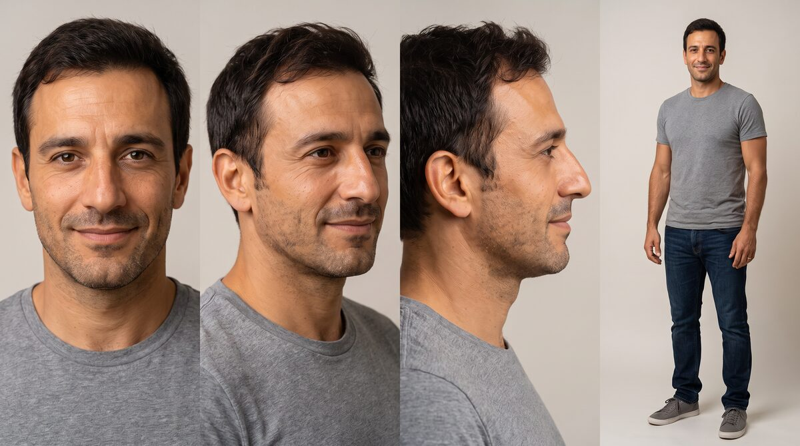
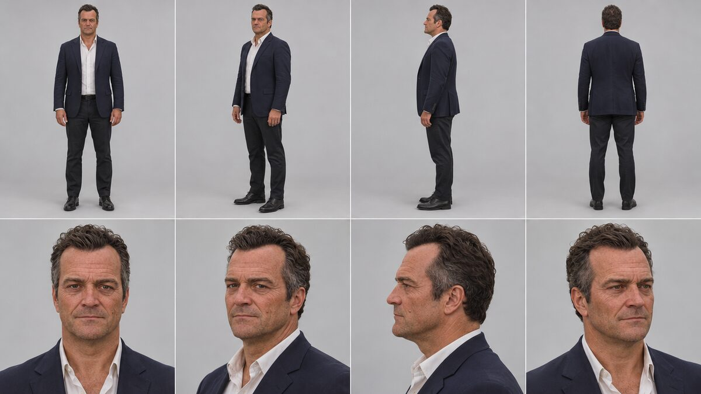
Una strada vuota
Un'immagine della strada senza nessuno, con la luce esatta che vuoi: l'ora d'oro tra le colline del canyon. Auto, moto, jeep e seggiolino del bebè sono parole nel prompt, non altre immagini.
Empty location photograph, no people, no cars. A two-lane winding asphalt road through dry golden hills in the Los Angeles canyons, faded yellow center lines, palm trees and power poles, the city skyline faint in the haze. Golden hour on a dry canyon road in the Los Angeles hills, low warm sun, dust in the air catching the light. Eye-level from the road, 24mm. Look: a frame from a big-budget Hollywood feature, shot on ARRI Alexa 65, fine 35mm film grain, natural colors, real textures, no retouching. No text, no logos, no watermark.
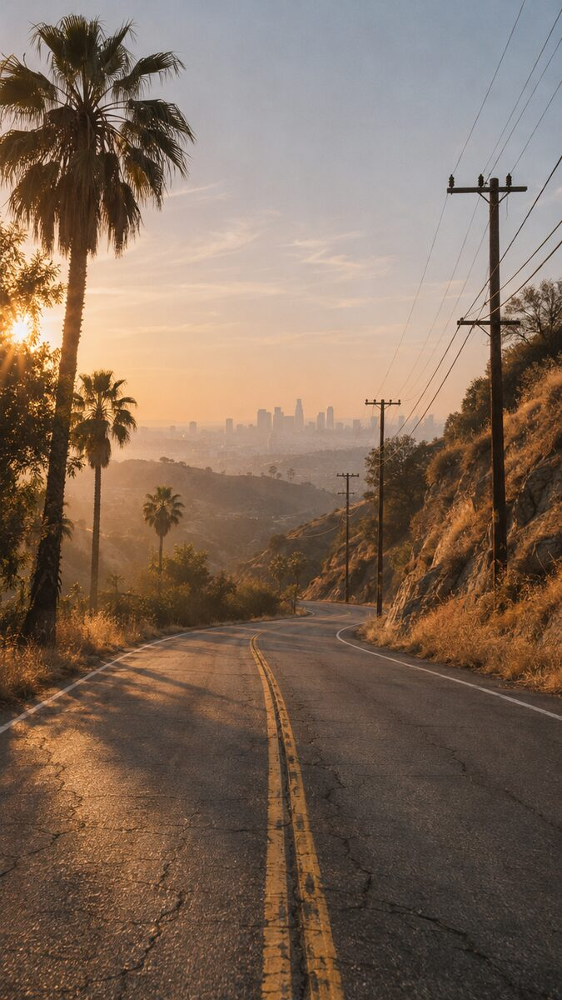
Due generazioni con gli stessi blocchi fissi
Due generazioni di Seedance 2.5, 10 secondi l'una, 4:3. Ogni prompt parte con gli stessi blocchi e poi va inquadratura per inquadratura. Il blocco di continuità dice esattamente chi guida quale auto, in quale corsia e quale finestrino è aperto.
VIDEO A, "The ride": 6 shots, 10 seconds, 4:3. REFERENCES: @Image1 = the father, @Image2 = Michael, @Image3 = Franklin, @Image4 = Trevor (identity sheets: use them only for faces, hair and clothes; never render a sheet, a grey studio background or a second copy of anyone). @Image5 = the canyon road (place and light only). GLOBAL LOOK: photoreal live-action feature film, 4:3, 24 fps real time. ARRI Alexa Mini, spherical primes, Kodak Portra 400 colour, fine film grain. Golden hour in the Los Angeles canyon hills: low warm sun behind the convoy as the key, warm bounce from the dry grass as the fill, a bright rim of light on hair and dust. Palette: warm gold, dusty amber, sky blue, the white of the convertible, the red of the jeep. Real skin with pores and a little sweat, no beauty filter, no CGI, no game look. CONTINUITY BIBLE (never changes): one two-lane canyon road, the convoy drives AWAY from the camera's left toward the right of the frame in every side shot. The father drives a white 1962 convertible, top down, red-brown leather seats, in the RIGHT lane; he sits on the LEFT side of his car, behind the wheel, alone in the front. Michael drives a black modern luxury sedan in the LEFT lane, exactly alongside the convertible; the sedan's front PASSENGER window, the one facing the father, is FULLY ROLLED DOWN, Michael sits in the sedan's driver seat and looks across through that open window; his hands always stay inside his own car. Franklin rides a dark green touring motorcycle and passes on the left. Trevor drives a faded red open-top 1980s jeep with a roll bar about 15 metres ahead: he SITS in the driver seat behind the steering wheel the whole time, his left hand on the wheel; he never stands up and the jeep never moves without him at the wheel. ONE PERSON PER VEHICLE: Trevor is ALONE in his jeep, seated at the wheel (nobody in the passenger seat or in the back), Michael is ALONE in his sedan, Franklin rides ALONE, the father is the only adult in the convertible. Eyelines: the father looks LEFT to Michael and Franklin, AHEAD to Trevor. The convertible has a normal interior rear-view mirror at the top centre of the windscreen frame, angled to show the back seat. THE BACK SEAT OF THE CONVERTIBLE IS NEVER IN FRAME IN THIS VIDEO. CAST WARDROBE: @Image1 the father, 30, short dark-brown hair, warm brown eyes, light stubble, smile lines, a likeable normal guy, plain heather-grey t-shirt, gold wedding ring. @Image2 Michael, late 40s, dark hair combed back with grey temples, navy suit jacket open over a white open-collared shirt. @Image3 Franklin, about 25, very short black hair, short neat beard, dark blue short-sleeve button shirt over a white long-sleeve tee, thin gold chain. @Image4 Trevor, about 45, balding with messy dark hair on the sides, sunburnt, dotted CUT HERE neck tattoo, dirty off-white V-neck; lovable, never menacing. LOCATION: @Image5, a winding two-lane canyon road through dry golden hills, palm trees and power poles, the city skyline faint in the haze. No other place. SPEED: everyone drives at a steady 50 km/h, real time, no slow motion. The camera only tracks smoothly alongside or holds; one simple action per shot. SHOT BY SHOT: [0:00-0:01.5] SHOT 1, close-up of @Image1 the father behind the wheel, side view from the passenger side, chest up. He is already grinning in disbelief at something on his left; the grin breaks into a laugh. [0:01.5-0:03] SHOT 2, medium from the road, the camera tracking backwards in front of the motorcycle. CUT. @Image3 Franklin on the green motorcycle passes the convertible on the left and gives a relaxed two-finger salute. [0:03-0:05] SHOT 3, medium two-shot from the right side of the convertible looking across the father to the sedan, tracking. CUT. Through the fully open passenger window of the sedan, @Image2 Michael, at his own steering wheel, raises his right hand inside his car and waves; the father laughs and waves back with his left hand. [0:05-0:06.5] SHOT 4, wide from behind the jeep, tracking. CUT. @Image4 Trevor, seated at the wheel and driving with his left hand, throws his right arm high out of the open jeep and waves it wildly back at the convoy, looking back over his shoulder and laughing; gold dust flies. [0:06.5-0:08.5] SHOT 5, close-up of the father, 85mm, side view, tracking. CUT. He laughs so hard his eyes fill with tears; he wipes one eye with the back of his hand and keeps smiling. [0:08.5-0:10] SHOT 6, medium close-up through the sedan's fully open passenger window, tracking. CUT. @Image2 Michael looks across at the father with a warm fatherly look and gives one slow nod: it is time. EMOTIONAL ARC: disbelief and joy (0-1.5) → pure fun (1.5-6.5) → laughter turning into tears (6.5-8.5) → a calm "it is time" (8.5-10). Never resets. AUDIO: diegetic only: engines, wind, tyres, the motorcycle passing, laughter. No music, no speech. TEXT: no text anywhere: no signs, no captions, no subtitles, no logos, no watermark. AVOID: a moving vehicle with nobody at the wheel, Trevor standing up in the jeep, extra people in any vehicle, passengers in the jeep, a hand passing through glass, anyone switching seats or windows, a closed window with someone waving through it, a side mirror, faces changing between shots, extra fingers, a character sheet or white background, slow motion, chaotic composition.
VIDEO B, "The baby": 5 shots, 10 seconds, 4:3. It continues directly from video A on the same road at the same moment of the same sunset. REFERENCES: @Image1 = the father, @Image2 = Michael, @Image3 = Franklin, @Image4 = Trevor (identity sheets: use them only for faces, hair and clothes; never render a sheet, a grey studio background or a second copy of anyone). @Image5 = the canyon road (place and light only). GLOBAL LOOK: photoreal live-action feature film, 4:3, 24 fps real time. ARRI Alexa Mini, spherical primes, Kodak Portra 400 colour, fine film grain. Golden hour in the Los Angeles canyon hills: low warm sun behind the convoy as the key, warm bounce from the dry grass as the fill, a bright rim of light on hair and dust. Palette: warm gold, dusty amber, sky blue, the white of the convertible, the red of the jeep. Real skin with pores and a little sweat, no beauty filter, no CGI, no game look. CONTINUITY BIBLE (never changes): one two-lane canyon road, the convoy drives AWAY from the camera's left toward the right of the frame in every side shot. The father drives a white 1962 convertible, top down, red-brown leather seats, in the RIGHT lane; he sits on the LEFT side of his car, behind the wheel, alone in the front. Michael drives a black modern luxury sedan in the LEFT lane, exactly alongside the convertible; the sedan's front PASSENGER window, the one facing the father, is FULLY ROLLED DOWN, Michael sits in the sedan's driver seat and looks across through that open window; his hands always stay inside his own car. Franklin rides a dark green touring motorcycle and passes on the left. Trevor drives a faded red open-top 1980s jeep with a roll bar about 15 metres ahead: he SITS in the driver seat behind the steering wheel the whole time, his left hand on the wheel; he never stands up and the jeep never moves without him at the wheel. ONE PERSON PER VEHICLE: Trevor is ALONE in his jeep, seated at the wheel (nobody in the passenger seat or in the back), Michael is ALONE in his sedan, Franklin rides ALONE, the father is the only adult in the convertible. Eyelines: the father looks LEFT to Michael and Franklin, AHEAD to Trevor. The convertible has a normal interior rear-view mirror at the top centre of the windscreen frame, angled to show the back seat. The back seat is NOT visible until SHOT 3: then, strapped in behind the father, a grey rear-facing infant car seat with a sleeping baby in a tiny knitted hat, a small soft toy on the handle. CAST WARDROBE: @Image1 the father, 30, short dark-brown hair, warm brown eyes, light stubble, smile lines, a likeable normal guy, plain heather-grey t-shirt, gold wedding ring. @Image2 Michael, late 40s, dark hair combed back with grey temples, navy suit jacket open over a white open-collared shirt. @Image3 Franklin, about 25, very short black hair, short neat beard, dark blue short-sleeve button shirt over a white long-sleeve tee, thin gold chain. @Image4 Trevor, about 45, balding with messy dark hair on the sides, sunburnt, dotted CUT HERE neck tattoo, dirty off-white V-neck; lovable, never menacing. LOCATION: @Image5, a winding two-lane canyon road through dry golden hills, palm trees and power poles, the city skyline faint in the haze. No other place. SPEED: everyone drives at a steady 50 km/h, real time, no slow motion. The camera only tracks smoothly alongside or holds; one simple action per shot. SHOT BY SHOT: [0:00-0:02.5] SHOT 1, high wide shot from behind the convoy, tracking. At a junction with a stop sign, a side road turns off to the LEFT up into the hills. The motorcycle, the black sedan and the red jeep (Trevor alone in it, seated at the wheel, driving) all slow down and turn LEFT onto the side road one after the other; the white convertible keeps going STRAIGHT on the main road, alone. @Image4 Trevor, still seated and driving, raises his right arm high out of the jeep in a last goodbye. [0:02.5-0:04] SHOT 2, close-up of the father, side view, tracking. CUT. He glances left at the three vehicles disappearing up the side road; a small sad smile. [0:04-0:06] SHOT 3, extreme close-up of the interior rear-view mirror only, locked-off. CUT. The mirror shows the BACK SEAT, not his face: in it, the grey rear-facing infant car seat and the baby asleep in a tiny knitted hat. [0:06-0:08] SHOT 4, from the front of the car, looking back past the father's shoulder into the back seat. CUT. The father turns and looks at his sleeping baby; he smiles softly, one tear on his cheek, then turns back to the road. [0:08-0:10] SHOT 5, wide from high behind, tracking slowly. CUT. The white convertible drives alone down the straight road toward the low golden sun, getting smaller, dust settling behind it. EMOTIONAL ARC: the parting (0-2.5) → a little sadness (2.5-4) → surprise and warmth (4-6) → a quiet, happy, grown-up smile through tears (6-10). Never resets. AUDIO: diegetic only: engines, wind, tyres, the motorcycle passing, a baby's soft breathing in SHOTS 3 and 4. No music, no speech. TEXT: no text anywhere: no readable signs (the stop sign is seen from behind or too far to read), no captions, no subtitles, no logos, no watermark. AVOID: a moving vehicle with nobody at the wheel, Trevor standing up in the jeep, extra people in any vehicle, passengers in the jeep, a hand passing through glass, anyone switching seats or windows, a closed window with someone waving through it, a side mirror, faces changing between shots, extra fingers, a character sheet or white background, slow motion, chaotic composition.
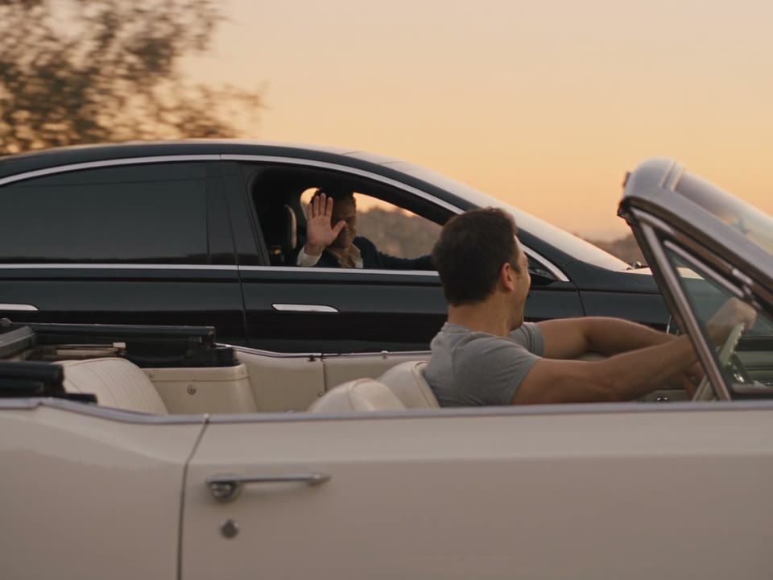
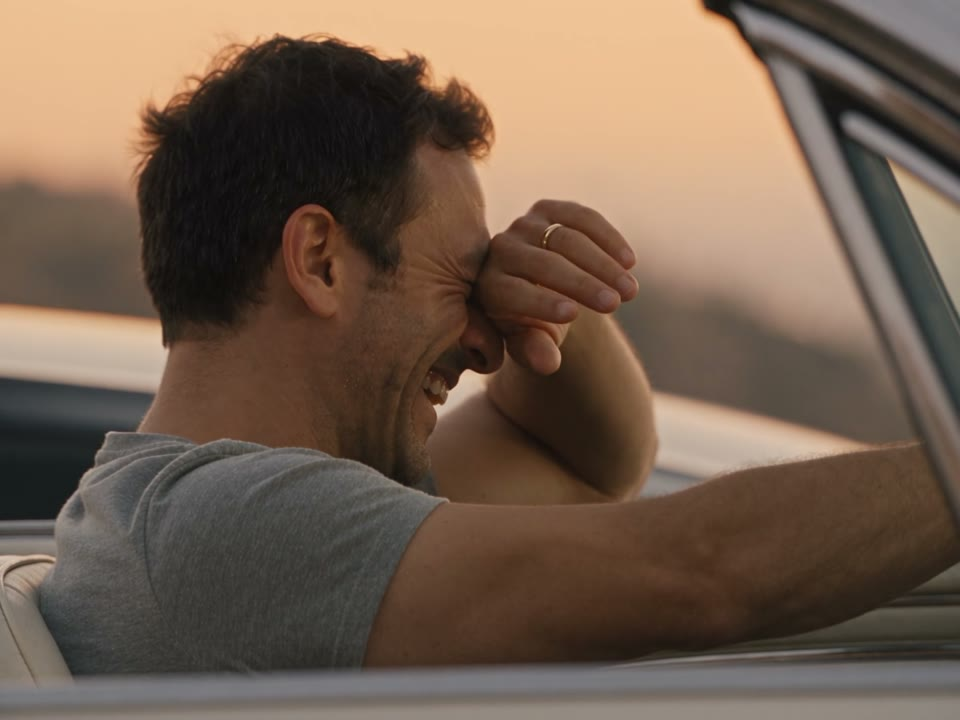
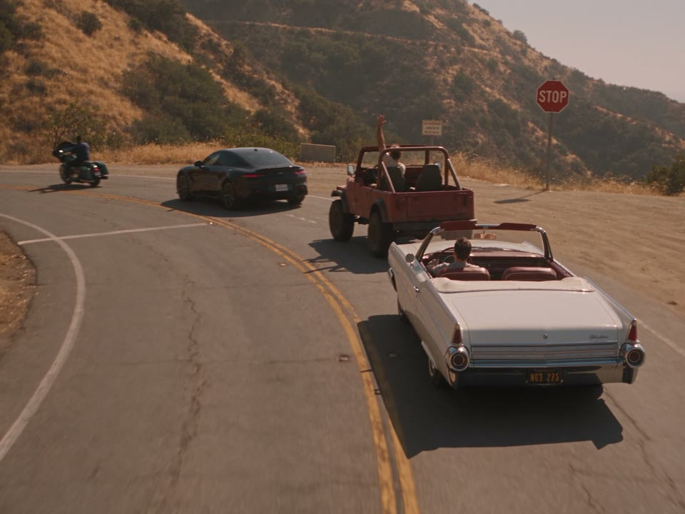
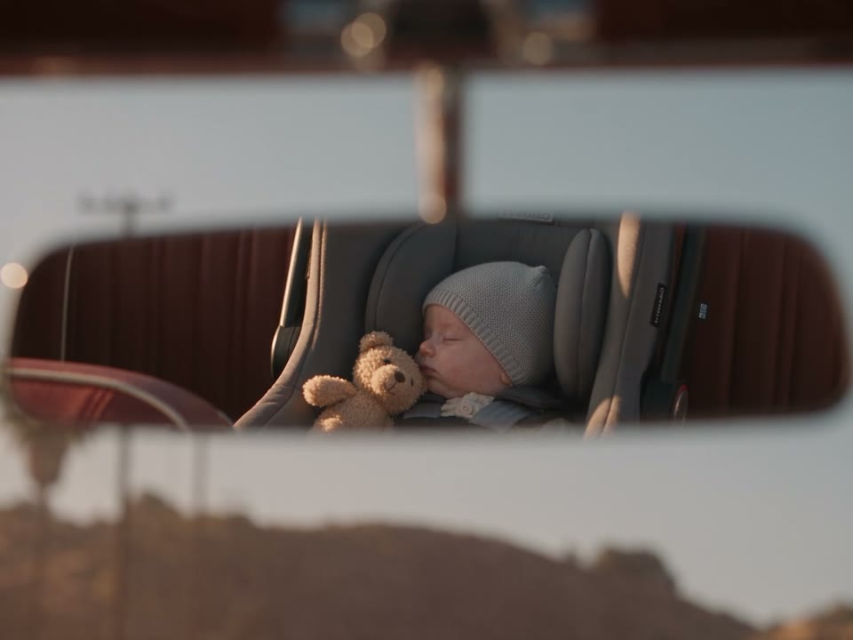
Prima il draft, poi Full Quality
Genera ogni scena come draft (bozza) a 480p. È veloce ed economico, così puoi guardarla, sistemare il prompt e rigenerarla. Solo quando la ripresa è giusta, mandala in Full Quality su Kolbo. Renderizza di nuovo la stessa ripresa in 1080p nativo.
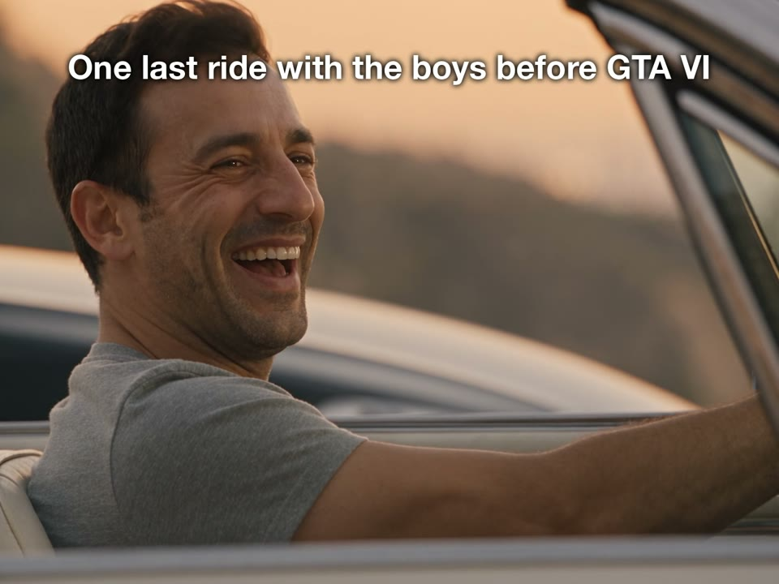
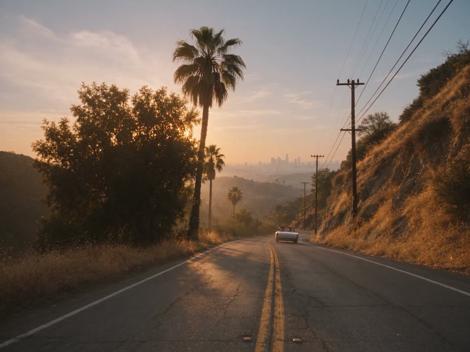
Monta stretto e chiudi con mission passed
Taglia ogni inquadratura a uno o due secondi e arriva presto al bebè. Poi chiudi con il linguaggio del gioco: il vero "mission passed" giallo con una checklist che racconta la storia. L'ho fatto ricostruire a Claude partendo da screenshot veri del gioco.
I attached real screenshots of the GTA V "mission passed" screen. Rebuild it as a transparent PNG overlay for my video, exactly like the game: trace the yellow "mission passed" lettering from the screenshot (don't use a similar font), the same yellow and the same dark box under it with a title row, three rows with white checkboxes and a "Completion - Gold 100%" row with the gold dot. My texts: title "The Last Ride", rows "13 Years with the Boys", "One Last Ride", "Became a Dad". Then put it on the last frame of my video with a short fade-in, and keep it inside Instagram's safe zone: nothing in the top 250 px, the bottom 420 px or the right-side icons of a 1080x1920 frame.
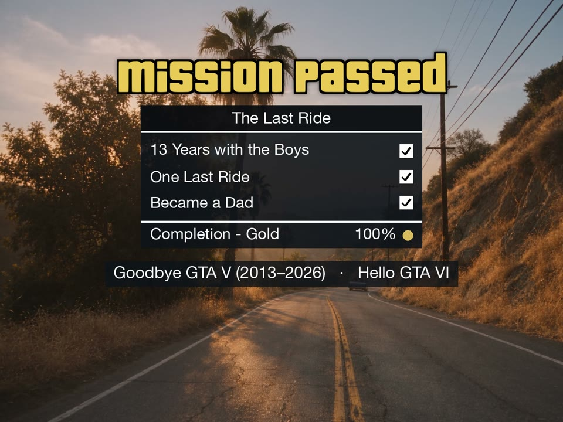